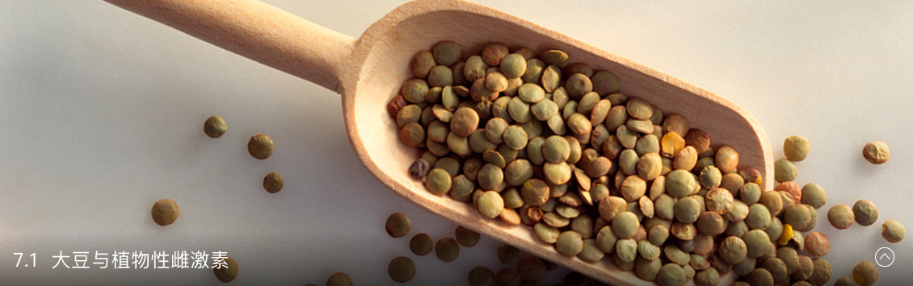
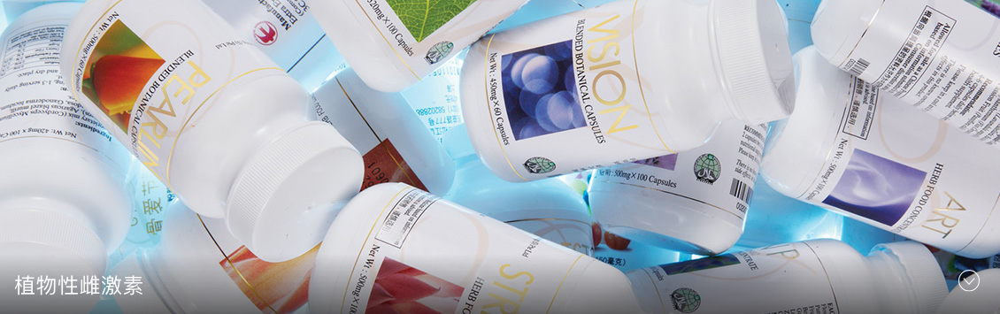
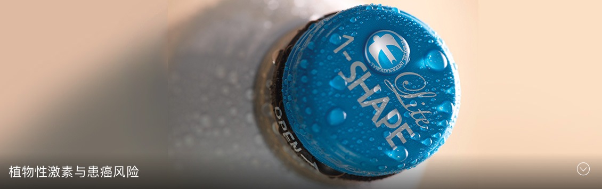

在传统亚洲饮食中占据重要地位并有着“黄宝石”之称的大豆，富含蛋白质与膳食纤维，却不含胆固醇。所以人们普遍认同食用大豆能够降低罹患疾病的风险。但是是否有任何证据能够证明二者之间的关联？如若有，大豆是如何帮助缓解多种健康问题的呢？
大豆是一种非常独特的植物。一年生豆科植物——大豆，陪伴了人类约5,000年。大豆蛋白质亦拥有丰富多样的历史，如今它已成为很多人摄取蛋白质的一项重要来源。蛋白质约占人体组织的20%。摄入蛋白质后，人体会将其分解为氨基酸，这些氨基酸可用于您体内几乎每一次的新陈代谢。
氨基酸可分为两大类：必需氨基酸与非必需氨基酸。人体可自行产生非必需氨基酸，却无法制造必需氨基酸。您需要透过饮食来为身体提供必需氨基酸。大豆是一种优异的蛋白质来源。在植物性蛋白质中，大豆蛋白质被视为一类“完整”的高质量蛋白质，包含所有维持人体生长发育所需的必需氨基酸。
联合国粮农组织（FAO）与世界卫生组织（WHO）的联合推荐，促进了现在常用的蛋白质消化率校正氨基酸记分法（PDCAAS）的发展。这项测定方法根据不同的资料评估了蛋白质对人体的营养价值，包括消化系统的不同部位对蛋白质重要成分的吸收程度。当运用这项精确的测定方法来检测时，大豆蛋白质与动物性蛋白质一样获得了1.00分——即可能达到的最高等级。大豆更具优势的地方在于：不含与动物性蛋白质有关的高卡路里与高脂肪。
除了蛋白质，大豆也可提供优质的钾、锌、铁、维生素E、磷与B群维生素。

...

...